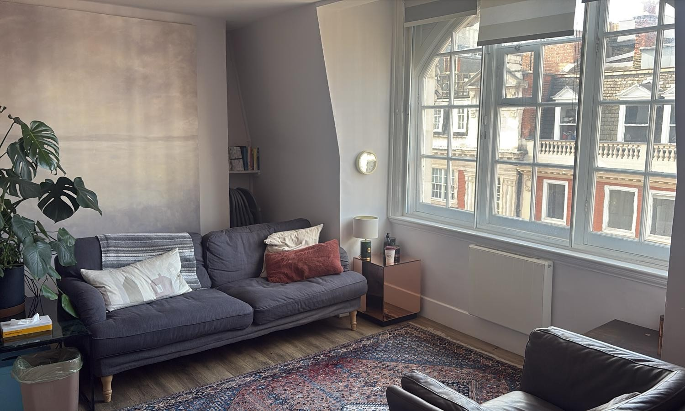

Enter a calm, confidential space where you are invited to slow down, feel supported, and begin to understand yourself more deeply. Together, we can explore the possibility of meaningful, lasting change in your life.
Discover MoreAs an accredited and highly experienced psychotherapist practising in Central London, I offer a warm, insightful and collaborative space where personal growth can become possible.
Choosing to begin therapy is an act of real courage. It means turning towards what is difficult rather than avoiding it, and allowing yourself to be seen, understood, and supported.
Across my work in both the NHS and private settings such as the Priory, I’ve had the privilege of supporting people at all stages of life, each bringing their own unique complexities. I’ve worked alongside individuals facing anxiety, trauma, addiction and relationship difficulties, as well as those experiencing a more indefinable sense that something just doesn’t feel quite right.
Together, we can make space to explore what’s going on beneath the surface for you, at a pace that feels right. Through this work, it becomes possible to find greater clarity, steadiness, and a renewed sense of hope.
I specialise in providing in-person and online therapy in London for those facing complex mental health challenges. Whether you require addiction therapy, trauma counselling, or support for anxiety, I am here to help you rebuild and recover.
A complimentary initial phone call to understand your goals and briefly discuss what brings you to therapy. Contact me and arrange a call at a time to suit you.
An extended exploratory session in a safe, collaborative space, offering you the chance to experience what it feels like to work together and ensure the fit is right for your journey.
Deep and impactful. We use the relationship that develops between us to gain insight into unconscious patterns, allowing a deeper sense of self-awareness to emerge.


Talking Health
1 Birkenhead Street
London WC1H
The Practice
20 Great Portland Street
London W1W
(Opening in May)
344-354 Gray's Inn Rd
London WC1X 8BP

Secure, confidential therapy available for remote clients.
Session fees are £120–£150 for 50 minutes.
Sessions usually take place weekly, with the option of twice-weekly work where appropriate.
A limited number of concessionary spaces are available.
I accept insurance from Aviva, Cigna, Evernorth, Healix, and WPA.
Please contact me for current availability.
I have some availability at present. Fill out the form below or call me for a complimentary consultation.